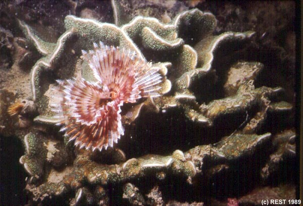
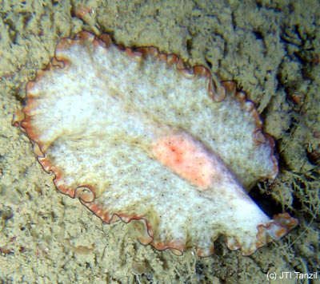
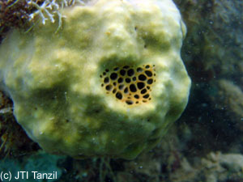

Marine Fauna of Singapore
 Cushion star, Echinodermata: Asteroidea: Culcita novaeguineae, Pulau Hantu western patch reef, August 2003. Normally feeds on live coral polyps, other sessile organisms and organic-rich sediments by everting its stomach over food source. Closely related to the sea star. The thick cushion shape of the body may make it hard for fish predators to bite. |
Sea squirt, Chordata. Sea squirts possess a primitive notochord in their juvenile stage which they lose when they reach adulthood. They come in a variety of colours and forms. |
|
 Featherduster worm, Annelida: Sabellidae: Sabellastarte spectabilis, Pulau Hantu, June 1989. The feather-duster worm lives in a leathery tube lodged within the coral colony. Its 'plume' consists of modified head appendages used for trapping plankton from the water. |
Featherduster worm, Annelida: Sabellidae, Pulau Hantu western patch reef, August 2003. Sabellids on Pavona coral. |
 Featherduster worm, Annelida: Sabellidae, Pulau Hantu western patch reef, August 2003. Sabellid on Pectinia coral. |
Giant clam, Tridacna, Pulau Hantu west, 2 August 2003. These rare clams can attain a size of 40 cm or more. Some species embed themselves in a rock or dead coral and stay there for the rest of their lives. |
|
Giant clam, Tridacna crocea, Raffles Lighthouse, 2003. Giant clams harbour symbiotic algae in their body tissues which provide food via photosynthesis. They also contribute to the clams' brilliant colours. |
Giant clam, Tridacna crocea, Pulau Hantu, 2003 |
|
Tiger cowrie, Cypraea tigris. Cowries have an extra shiny shell which is usually completely covered by their fleshy mantle. They are algal grazers. |
Octopus, Cephalopoda, Pulau Hantu, 12 July 2003. Though it doesn't have an external shell, the octopus is also a Mollusc. They are extremely effective predators and one of the most intelligent invertebrates around. |
|
Phyllid nudibranch, Gastropoda: Phyllidiella nigra, Pulau Hantu, 12 July 2003. 'Nudibranch' literally means 'naked gills'. These molluscs have lost their shells in adulthood, and resemble colourful underwater slugs. They are omnivorous, feeding on sponges and hydroids as well. |
Phyllid nudibranch, Gastropoda: Phyllidiella pustulosa, Pulau Hantu west, 2 August 2003. |
|
Phyllid nudibranch, Gastropoda: Phyllidia picta, Pulau Hantu west, 12 July 2003. The striking appearance of nudibranchs are thought to serve as warning colouration for their repugnant taste. |
Phyllid nudibranch, Gastropoda: Phyllidia elegans |
|
Nudibranch, Gastropoda; Gymnodoris rubropapulosa, Pulau Hantu East, 2002. The external gills are present in a flower-like bunch at the posterior end of the nudibranch. |
Sea slug, Gastropoda: Onchidium, Raffles Lighthouse, 2002. Onchidium slugs blend in with their environment as their skin resembles the texture of an algae-covered rock. They do not have an external shell. |
|
Cuttlefish, Cephalopoda, Pulau Semakau, 2002. Cuttlefishes are masters of camouflage, often changing colours and skin patterns to match their background. |
Flatworm, Turbellaria, Raffles Lighthouse, 2003. Flatworms resemble nudibranchs but they do not have the flower-like external gills of the latter. |
|
Flatworm, Turbellaria, Pseudoceros, Pulau Hantu patch reef, 2003 |
Flatworm, Turbellaria, Pulau Hantu patch reef, 2003 |
|
Fiddler crab, Ocypodidae: Uca annulipes, Pulau Semakau, 2001. The male fiddler crab has an enlarged pincer which he uses to attract females and intimidate other males. |
Hairy crab, Pilumnus vespertilio, Pulau Hantu west, 12 July 2003. The hairy crab is covered by a coat of silky hairs which help it to blend in with the surroundings. |
|
Swimming crab, Portunidae, Thalamita, Pulau Hantu west, 12 July 2003. The hind legs of portunid crabs are modified into paddles. This helps the crabs swim better. |
Swimming crab, Portunidae, Thalamita spinimana |
|
Swimming crab, Portunidae, Thalamita spinimana |
Gorgonian shrimp, Torzeuma armatum, Pulau Hantu patch reef, 2003. These small cryptic shrimps are very hard to spot as they blend in almost perfectly with their seawhip hosts. |
|
Sea squirts, Pulau Hantu west, 12 July 2003 |
Carpet anemone, Stichodactyla, Pulau Hantu west, 2 August 2003. Anemones, like hard corals, have stinging cells. However, they do not have a hard exoskeleton. |
|
Zoanthids, Labrador Beach, 2003. Zoanthids resemble colonial anemones. They do not have a hard skeleton and each polyp possesses two rings of tentacles. |
Hydroids, Raffles Lighthouse, 2002. Hydroids look like innocuous sea ferns, but are colonial animals which inflict a nasty sting when touched. |
|
Sea snake, Vertebrata: Laticauda colubrina, Pulau Hantu, 2003. The tail of the sea snake is laterally flattened into a paddle shape for better swimming efficiency. The sea snake is one of the most venomous animals in the world but is usually placid in nature and unlikely to bite without provocation. |
Barrel sponge, Porifera: Xestospongia, Kusu Island, 2004. Sponges are one of the simplest animals existing, consisting of a complex of cells. They are efficient, active filter feeders. |
|
Cup sponge, Porifera, NW Kusu Island, 2003. Sponges have masses of spicules embedded in their tissues so it's unwise to grab onto a sponge in a current unless you want a handful of spikes. |
Sponge, Porifera. Sponges are a common sight on reefs. Many species contain compounds that are biologically active. |
|
Squid, Cephalopoda: Sepioteuthis, Pulau Hantu, 12 July 2003. This shell-less mollusc can rapidly change colours to blend into its background, like its close relatives the cuttlefish and octopus. |
Green branching sponge, Porifera, Pulau Hantu, 12 July 2003. Sponges come in almost every colour on the visible spectrum. It has been thought that the colour pigments can act as a kind of sunscreen and protect the animal from harmful radiation. |
|
Zoanthids, Zoanthidea, Pulau Hantu, 12 July 2003. Note the difference between fully retracted and open polyps. |
Zoanthids, Zoanthidea, Pulau Hantu, 12 July 2003. Some colonies when fully retracted don't resemble anything at all! |
|
Sea fan, Melithaea, Kusu Island, March 2005. Also known as gorgonians, these filter feeders are usually found growing perpendicular to strong current flows. This particular fan was approximately 2 m in diameter. |
Sea fan, Melithaea, Kusu Island, March 2005. |
|
Flatworm, Turbellaria, Raffles Lighthouse, 29 Jan 2004. Flatworm approaching some ascidians. |
Flatworm, Turbellaria: Maiazoon orsaki, Raffles Lighthouse, 6 Feb 2004. Some flatworms have complicated and flowery edges. Note the head on the left with the simple antennae. |
|
Red egg crab, Xanthidae: Atergatis integerrimus, Sentosa, 21 Feb 2004. This pretty crab is poisonous, and is often found hiding in dead coral crevices. |
 Flatworm, Platyhelminthes, St John's Island, February 2005 |
|
Sea cucumber, Echinodermata: Holothuroidea: Holothuria leucospilota, Sentosa, 21 Feb 2004. Sea cucumbers are relatives of the sea stars and sea urchins. They mostly graze on detritus. If disturbed, this species will eject sticky white threads from its anus as a defence mechanism. |
Snapping shrimp, Alpheidae: Alpheus, Sentosa, 21 Feb 2004. This predatory shrimp uses its enlarged claw to produce shock waves in the water to stun its prey. You might hear the "click click" produced while diving! It is commonly associated with the goby. |
|
Worms in brain??? Porifera & Echinodermata, Sentosa, 21 Feb 2004. Many sponges on the reef harbour brittlestars which live in the crevices, feeding off the organic matter brought in by water currents produced by the sponge. It sometimes makes for a pretty strange sight. |
Octopus, Cephalopoda, Kusu Island lagoon, 10 April 2004. Octopus can change their colouration to suit their surroundings. With their tentacles tucked away, they can look just like a piece of rock. |
|
Cephalopod egg cases attached to Sargassum seaweed, Kusu Island, 10 April 2004. When they are close to hatching, you can even see the tiny eyes of the juvenile cephalopods in the egg cases. |
Coral ghost shrimp, Glypturus, Kusu Island, 10 April 2004. The coral ghost shrimp has the amazing ability to burrow into solid coral rock, where it stays to hide from predators. It tends to forage occasionally only at high tide or at night, and thus is rarely seen. It is also a rare species and seldom spotted on the reef flats of Singapore. Information from 'Rhythm of the Sea: The Life and Times of Labrador Beach'. |
|
Cowrie, Cypraeidae, St John's Island, February 2005. This individual was at least 5 cm in length. |
Barrel sponge, Porifera: Xestospongia, Kusu Island, 2004. Sponges are one of the simplest animals existing, consisting of a complex of cells. They are efficient, active filter feeders. |
|
Flatworm, Pseudoceros, Pulau Hantu, March 2005 |
Cowrie, Cypraeidae, Labrador Beach, April 2005. It is sometimes hard to recognise a cowrie as a snail when the mantle fully covers the shell. |
|
Sponge gemmule, Porifera, Pulau Hantu, April 2005. Sponges can reporduce asexually by developing buds or gemmules. |
Broad-club cuttlefish, Sepia latimanus, Pulau Hantu, March 2005. |
|
Flatworm, Turbellaria: Pseudoceros, Pulau Hantu western fringing reef, March 2003 |
Nudibranch, Gastropoda: Glossodoris atromarginata, Pulau Hantu, March 2005 |
|
Nudibranch, Gastropoda, Kusu Island, March 2005 |
Nudibranch, Gastropoda: Phyllidiella, Pulau Hantu, March 2005 |
|
Nudibranch, Gastropoda: Phyllidia, Pulau Hantu, March 2005 |
Nudibranch, Gastropoda: Pteraeolidia ianthina, Kusu Island, March 2005 |
|
Nudibranch, Gastropoda: Thecacera pennigera, Kusu Island, March 2005 |
Nudibranch, Gastropoda: Phyllidiella pustulosa, Raffles Lighthouse, March 2005 |
|
Nudibranch, Gastropoda: Phyllidia varicosa, Pulau Semakau, February 2005 |
Nudibranch, Gastropoda: Chromodoris lineolata, Pulau Hantu, March 2005 |
|
Nudibranch, Gastropoda: Flabellina rubrolineata, Pulau Semakau, February 2005 |
Oyster, Bivalvia: Spondylus, Raffles Lighthouse, March 2005. Look out for the oyster's colourful mantle tissue. |
|
Barrel sponge, Porifera: Xestospongia, Raffles Lighthouse, March 2005 |
Sea whip shrimp, Dasycaris zanzibarica, Pulau Hantu, March 2005. This tiny commensal shrimp is remarkably similar in appearance to its host sea whip. Length: to 15 mm. |
|
Icon sea star, Echinodermata: Asteroidea: Iconaster longimanus, Pulau Hantu, March 2005 |
Sea snake, Vertebrata: Laticauda colubrina, Raffles Lighthouse, 14 Nov 2003 |
|
Giant sea fan, Melithaea, Kusu Island, March 2005 |
 Sea fan on REU, Kusu Island, March 2005. This small gorgonian was growing on a fibreglass Reef Enhancement Unit, set down by researchers from the Marine Biology Lab to increase settlement spaces on the reef. |
|
Peacock anemone, Cerianthus, Raffles Lighthouse, March 2005. Also known as a tube anemone as it lives in a tube made of mucus mixed with sediment. |
Feather star, Echinodermata: Crinoidea, Raffles Lighthouse, March 2005 |
|
 Massive sponge, Porifera, Pulau Hantu, 2005 |
Sea fan, Melithaea, Raffles Lighthouse, March 2005 |
|
Sea fan, Melithaea, Raffles Lighthouse, March 2005 |
Featherduster worm, Sabellidae, Pulau Hantu western fringing reef, April 2005. Sabellid on Pachyseris. |
|
Featherduster worm, Sabellidae, Pulau Hantu western fringing reef, April 2005. Sabellid on Pectinia. |
Flatworm, Pseudobiceros, Kusu Island, March 2005 |
|
Flatworm, Maiazoon orsaki, Kusu Island, March 2005 |
Flatworm, Pseudobiceros, Kusu Island, March 2005 |
|
Flatworm, Pseudoceros tristriatus, Pulau Hantu, March 2005 |
Flatworm, Pseudoceros bimarginatus, Pulau Semakau, February 2005 |
|
Nudibranch, Gastropoda: Jorunna funebris, Terumbu Buran, September 2004 |
Back to top